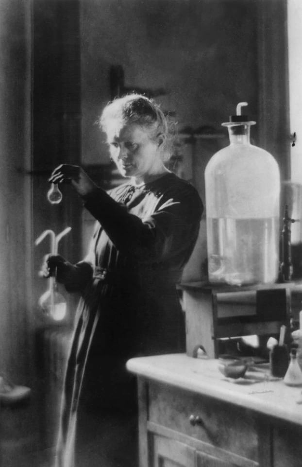
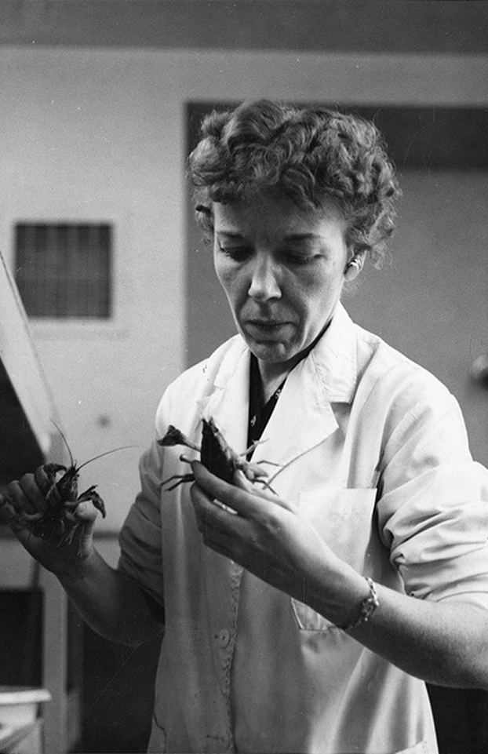
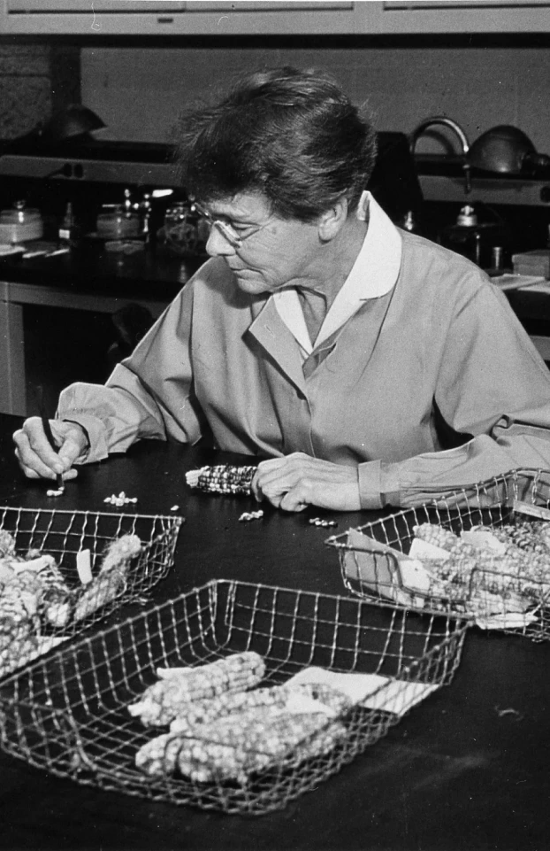
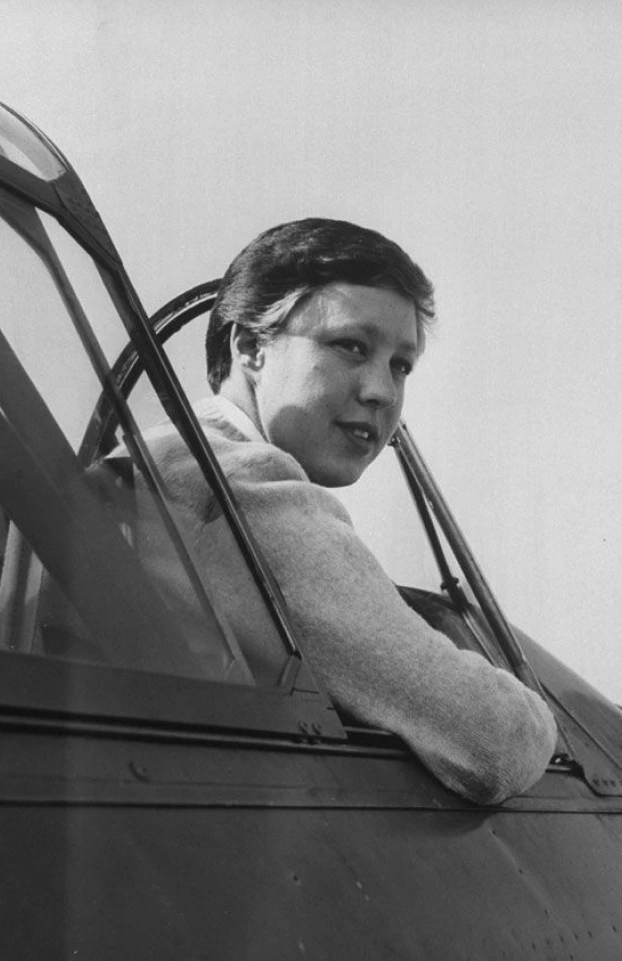

Este proyecto visibiliza el papel fundamental de las mujeres en el desarrollo científico a lo largo de la historia y en la actualidad. A través de biografías, investigaciones y testimonios, buscamos inspirar a nuevas generaciones, romper estereotipos de género y promover la igualdad en el ámbito científico.

Marie Skłodowska Curie
Fue una pionera en el estudio de la radiactividad, ganadora de dos premios Nobel en Física y Química. Descubrió los elementos radio y polonio, y abrió el camino para la medicina nuclear.

Mary Alice McWhinnie
Fue una destacada bióloga marina que investigó el plancton antártico y los efectos del frío extremo en los organismos marinos. Fue la primera mujer científica en pasar el invierno en la Antártida.

Barbara McClintock
Descubrió los "genes saltarines" o transposones en el ADN, lo que revolucionó la genética. Recibió el Premio Nobel por sus investigaciones en la citogenética del maíz.

Wally Funk
Fue una aviadora pionera y una de las integrantes del programa Mercury 13. Aunque no fue al espacio en su juventud, se convirtió en la persona de mayor edad en hacerlo en 2021.